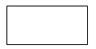
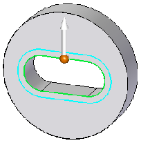
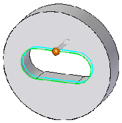
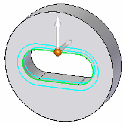

Offset edges
-
Choose Surfacing tab→Surfacing group→Split list→Offset Edge
 .
. -
Select a closed-loop edge set, such as the circle that represents a hole or opening in the part.
Tip:If you want to specify the offset edge direction, or if you want to offset edges in two directions (a double offset), you must select a tangentially continuous set of edges. For example:
-
Tangentially continuous

-
Continuous, but not tangential

-
-
Type the offset distance in the dynamic input box.
-
(Specify the direction of the offset) If the direction handle is displayed, it points to the default planar face for the offset imprint. You can change the direction by doing one of the following:
-
Click the direction handle.
-
Press the F key to flip it.
Refer to the two examples in column (A) in the following table.
-
-
(Specify single or double offset) Refer to the following table:
-
Press the T key once to specify a double-sided offset (column B).
-
Press the T key again to specify a single offset (column A).
(A) single offset
(B) double-sided offset
Offset along face

Offset direction flipped


-
-
Right-click to finish creating the offset edges.
You can use the Selection Type list on the Offset Edge command bar to specify what you want to offset:
-
A single chain of 2D elements you select (Chain option).
-
All chains of 2D elements on a face you select (Face option).
-
All continuous loops on a face (Loop option).
A chain or loop must be closed.